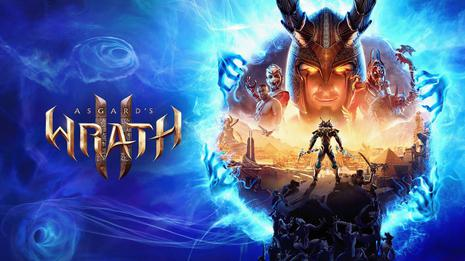

2024年11月 25 条
2024-11-27 15:09:49
2024-11-27 05:41:10
想看 An Unfinished Film 2024 Drama/Docufiction 1h 46m Overview Trailers & clips Cast Reviews Awa Running time 1h 46m ✓ Already watched Want to watch See also Caught by the Tid… 2024 film Mongrel 2024 film Rating: 6.9/10 IMDb > A film crew gathers in a hotel near Wuhan to…
（豆瓣在这里截断了，全文在这篇日记里）
2024-11-26 04:23:32
看过 妻子变成小学生。 / 妻、小学生になる。 ★★★☆☆
在看过真人版的情况下，点开了第一集，感觉食之无味，所以到此为止，弃坑。虽然后续可能才是最感人的地方，但是先弃坑了。
2024-11-26 04:06:41
2024-11-26 04:06:00
2024-11-25 17:53:05
看过 少女不毕业 / 少女は卒業しない ★★★☆☆
好吧，期待值过高了。毕业而已，怎么和跨越生死了一样。当年那么多次毕业也就是个里程碑而已。确实有十分怀念的同学/老师，但是并不是毕业典礼前会考虑的，都是怀旧感伤的时候才会想起来。然而真正想起来的时候却发现没有了联系方式，毕业后才是有更多故事发生的时候啊。 //看了评论，感觉主题有点Angel Beats的感觉
2024-11-25 17:47:51
看过 英雄联盟：双城之战 第二季 / Arcane Season 2 ★★★☆☆
看完了，故事依然是乱的，但是后面显然汇集起来，稍微好些。但是这个战争看的真的是无厘头，一会是友军一会是敌军的，就很随意。 //目前看了3集半，感觉电影的叙事跳来跳去，虽然这样子看上去画面很帅，但是故事很乱，而且片头还没有前情提要，很多细节记不清了。画面嘛，主打一个帅得精分，毕竟jinx是主角。另外你有两对同性恋了怎么一对异性恋都没有，未免太zzzq了吧。
2024-11-21 20:11:20
看过 我想和你在一起 ★★★★☆
剧情挺普通的的，但是画面滤镜用的比较少，看的很自然比较有好感，然后主题曲竟然是五月天的《突然好想你》，还挺合适的，又是那种我喜欢看的happy ending。
2024-11-20 04:58:26
想看 碟中谍8：最终清算 / Mission: Impossible - The Final Reckoning
这就最终清算了？上一部不还叫 part one
2024-11-19 18:56:45
玩过 白荆回廊 ★★★☆☆
立绘不错，经费都在这里，其他的就很一般，剧情也不是很吸引人，游戏规则也挺普通。还不如好好做古剑啊。
2024-11-18 17:30:24
想读 基因
2024-11-18 17:28:56
想读 癌症传
2024-11-18 17:28:18
想读 细胞传
2024-11-17 15:36:13
看过 小丑2：双重妄想 / Joker: Folie à Deux ★★★☆☆
总体看下来虽然不会犯困，但是也不够震撼。主打一个监狱体验，所以这个Lee到底是真的还是假的。这个第二部感觉有点狗尾续貂的意思。
2024-11-16 21:09:46

听说很不错，然而目前没有设备
2024-11-16 10:24:32
看过 小市民系列 / 小市民シリーズ ★★★★☆
前面一般，后面5集感觉突然变得有趣了，但是结局分手真的是没想到的，我要嗑男女主啊米泽穗信。 //真是和冰菓一个样，可惜没有京阿尼的画风 //wow 米泽穗信老师的作品啊，那还是要补一下的
2024-11-16 06:31:12
在看 英雄联盟：双城之战 第二季 / Arcane Season 2 ★★★☆☆
目前看了3集半，感觉电影的叙事跳来跳去，虽然这样子看上去画面很帅，但是故事很乱，而且片头还没有前情提要，很多细节记不清了。画面嘛，主打一个帅得精分，毕竟jinx是主角。另外你有两对同性恋了怎么一对异性恋都没有，未免太zzzq了吧。
2024-11-15 04:04:41
2024-11-14 16:14:39
想读 抗老化，你需要大重量训练
理论有点意思！
2024-11-12 04:14:11
想玩 合金弹头：战略版 Metal Slug Tactics
炒冷饭我喜欢
2024-11-12 04:10:33
听过 TBS系 金曜ドラマ「妻、小学生になる。」オリジナル・サウンドトラック ★★★★★
UZCL-2228 看完剧之后在B站上听了很不错，这样小众的OST原盘资源太难找啦
2024-11-12 04:00:05
2024-11-10 18:06:21
看过 闪电狗 / Bolt ★★★★★
看了开头以为是个很无聊的电影，结果突然跳出剧中剧的剧情，角色瞬间鲜活了起来。很纯粹的动画，很棒的动物细节刻画，以及生活细节的处理。非常温馨，很喜欢。
2024-11-10 04:54:51
想玩 你所需要的只是帮助 All You Need is Help
2024-11-09 09:16:07
看过 妻子变成小学生 / 妻、小学生になる。 ★★★★★
意外地催泪，全是没想到的剧情，原作者和编剧都太牛了。虽然标题有点变态，但是内容一点变态的地方都没有。探讨生死可能真的是中年人的必修课了，死后会发生什么真的是一头雾水，也不知道如果要离开世界怎么样才算是画上一个圆满句号，还要继续探索。音乐也好催泪啊我的天，两个主题旋律真是百听不厌：《優河 - 灯火》、《PASCALS - あけがたにくる人》。